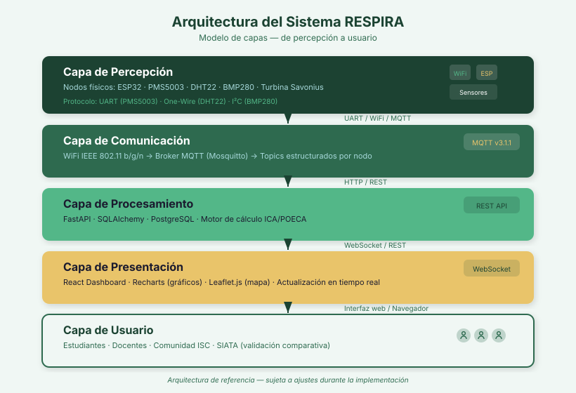
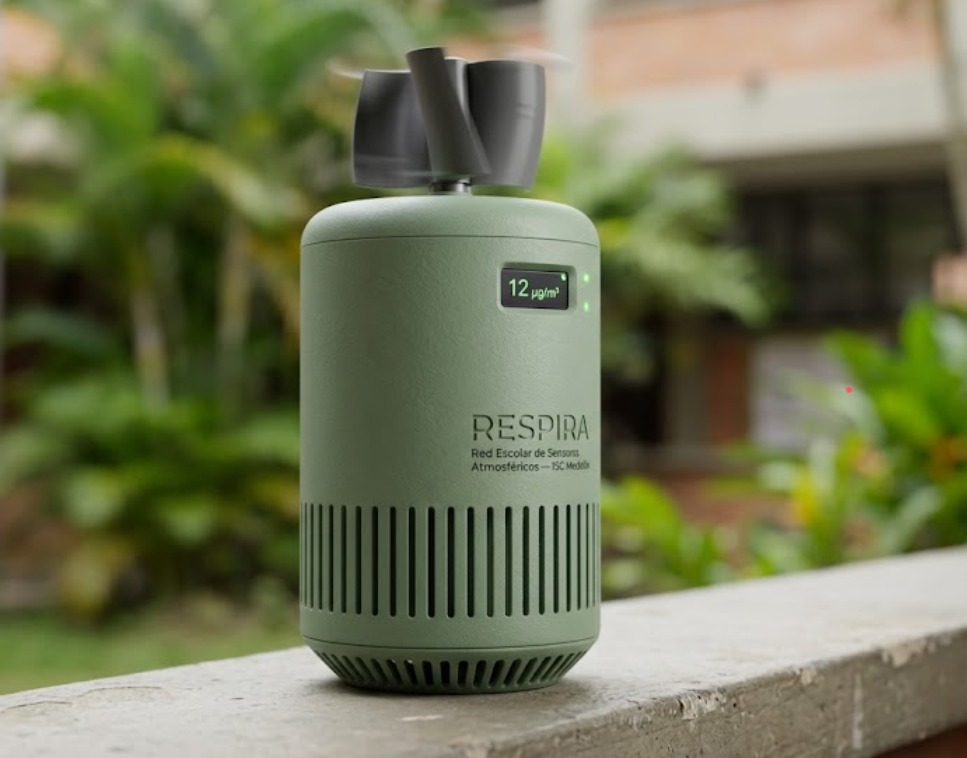
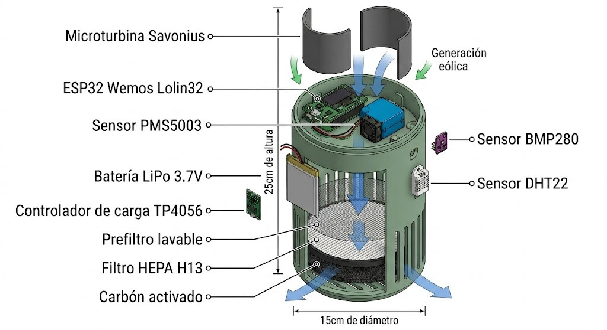
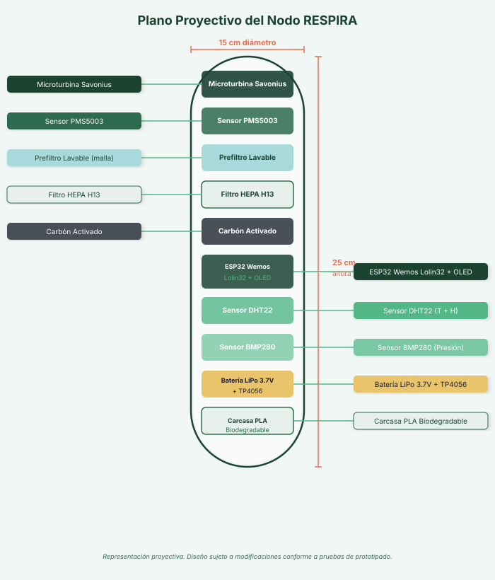
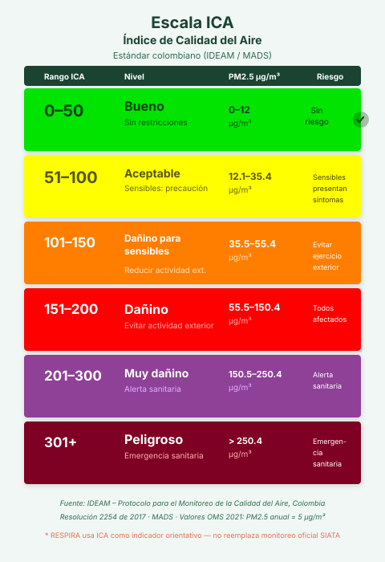

La solución tecnológica
Un nodo IoT que no solo mide — también genera su propia energía y purifica el aire. Tres dimensiones en un solo dispositivo del tamaño de una botella térmica.
 Electrónica del nodo
Electrónica del nodoInteligencia en el borde
El microcontrolador ESP32 orquesta tres sensores, calcula el índice ICA localmente y publica los datos por WiFi cada 60 segundos. Sin depender de la nube para decidir.
- PMS5003 — material particulado (PM1.0 / PM2.5 / PM10) vía UART.
- DHT22 — temperatura y humedad relativa.
- BMP280 — presión atmosférica vía I²C.
Dimensión científica
El PMS5003 mide PM por dispersión láser. El DHT22 y el BMP280 completan el perfil atmosférico. Datos publicados cada 60 s al broker MQTT.
Dimensión energética
Una microturbina Savonius capta la energía del viento. El TP4056 carga la batería LiPo 3.7V. El nodo opera 24 horas sin conexión eléctrica.
Dimensión ecológica
Filtrado tricapa: prefiltro lavable → HEPA H13 (>99.95% de partículas de 0.3µm) → carbón activado. El diferencial PM pre/post es medible en tiempo real.
¿Cómo funciona el nodo?
Captación de energía
La turbina Savonius convierte el viento en electricidad. El TP4056 gestiona la carga de la batería LiPo con protección contra sobrecarga.
Medición pre-filtrado
El PMS5003 registra la calidad del aire ambiente antes de los filtros. Este es el dato "crudo" de contaminación.
Filtrado tricapa
El aire pasa por el prefiltro lavable, el HEPA H13 y la cámara de carbón activado. El resultado es aire significativamente más limpio.
Procesamiento y publicación
El ESP32 calcula el ICA colombiano (IDEAM/MADS) y publica un JSON al topic respira/isc/nodo01/datos vía WiFi.
Visualización en tiempo real
FastAPI recibe el mensaje, calcula estadísticas y persiste en PostgreSQL. El dashboard React actualiza la pantalla en menos de 3 segundos.

Arquitectura del sistema RESPIRA — flujo de datos desde el nodo hasta el usuario final
Stack tecnológico
| Capa | Tecnología | Función |
|---|---|---|
| Sensores | PMS5003, DHT22, BMP280 | Medición PM, temperatura, humedad, presión |
| Firmware | C++ / Arduino IDE, ESP32 | Lectura, cálculo ICA, publicación MQTT |
| Comunicación | WiFi 802.11 b/g/n, MQTT (Mosquitto) | Transmisión de datos cada 60 s |
| Backend | FastAPI, SQLAlchemy, PostgreSQL | Recepción, validación, persistencia, API REST |
| Frontend | React, Recharts, Leaflet.js | Dashboard interactivo, mapa, gráficos |
| Carcasa | PLA biodegradable, impresión 3D | Estructura 25 cm × Ø 15 cm, resistente a UV |
Ubicación del piloto
Galería del prototipo



Nota: todas las representaciones son proyectivas y sujetas a modificaciones conforme a las pruebas de prototipado.

Escala ICA colombiana (IDEAM/MADS) — estándar utilizado por RESPIRA para clasificar la calidad del aire